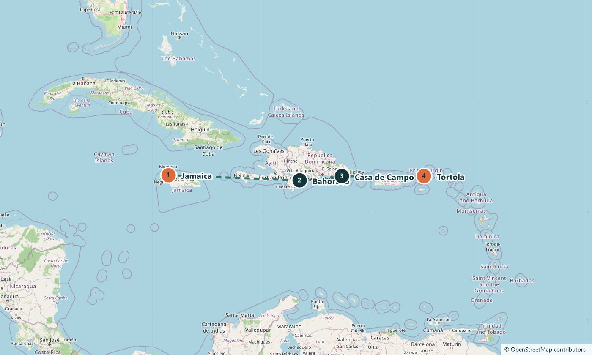

Leg 3 · Jamaica → British Virgin Islands
760 miles of blue water to the Virgin Islands
Offshore passage
9–23 Jan 2027 · 2–14 days · 750–770 nautical miles on the full leg
The route
The longest crossing of the season, with seven nights at sea. If you want offshore experience before a bigger voyage of your own, this is your leg. You go ashore in the Dominican Republic between passages and finish in the British Virgin Islands.
The stops
Jamaica
Jamaica. Departure. See on Google Maps
Bahoruco
Dominican Republic. The quiet south-west coast, far from the resort hotels of Punta Cana. See on Google Maps
Casa de Campo
Dominican Republic. A marina village near La Romana and a base for trips inland. See on Google Maps
Tortola
British Virgin Islands. Arrival in the islands with one of the largest charter fleets in the Caribbean. See on Google Maps
The plan for each day, and exact harbours, are shared when you book and can change with the weather.
The route on a map
